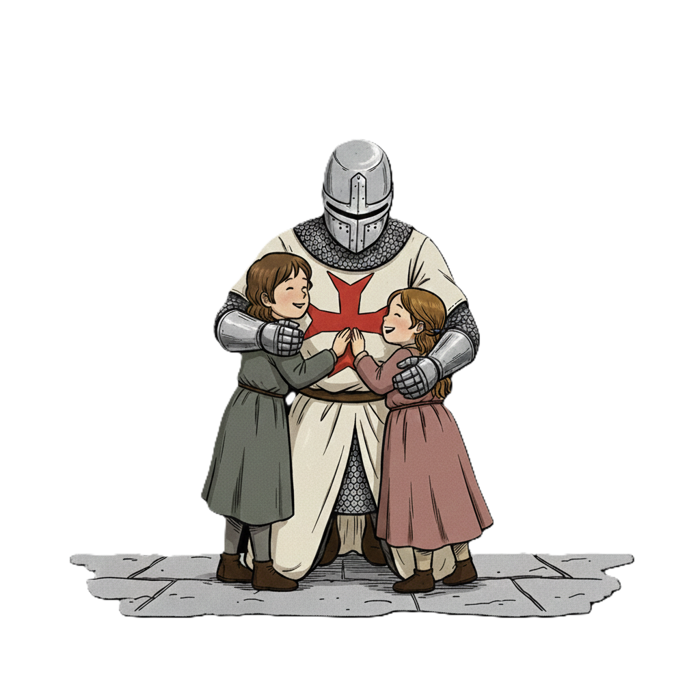
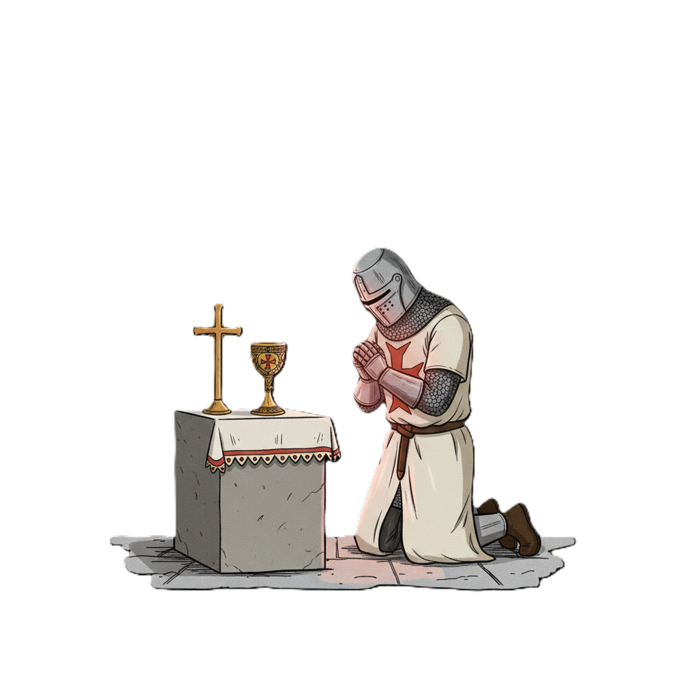
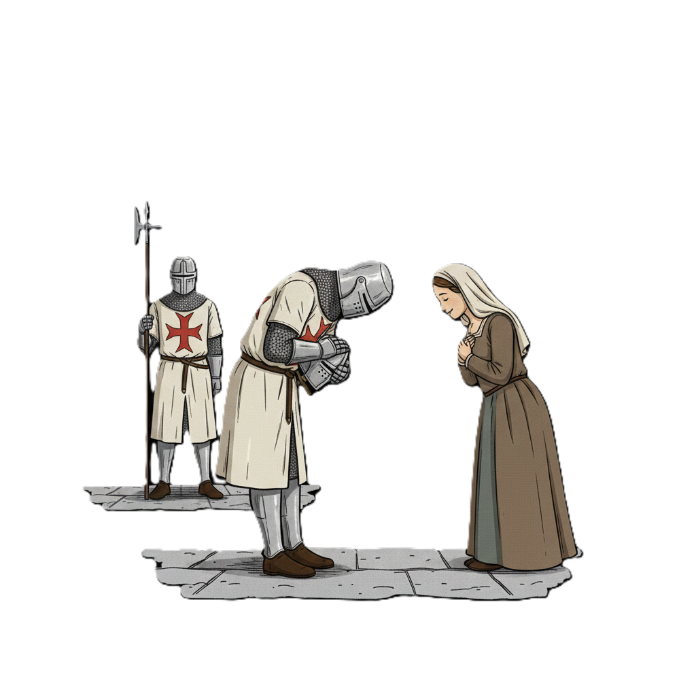
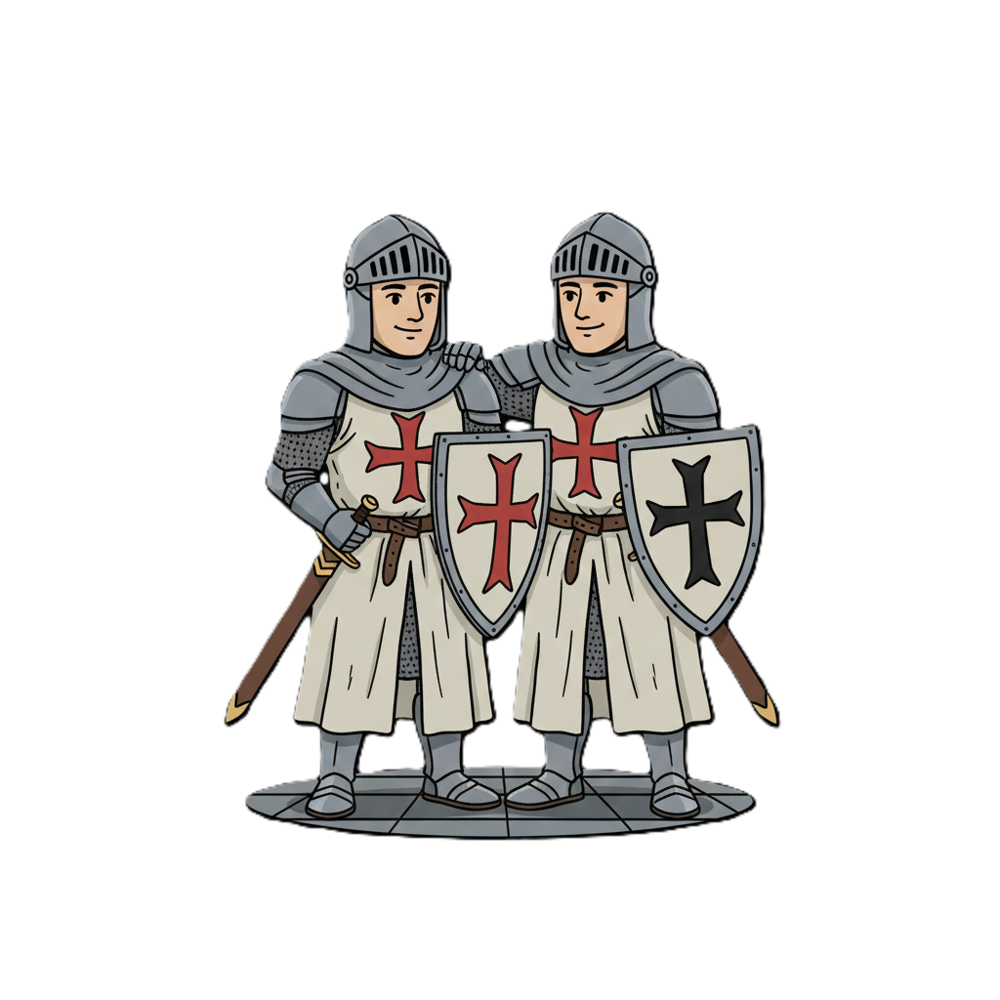
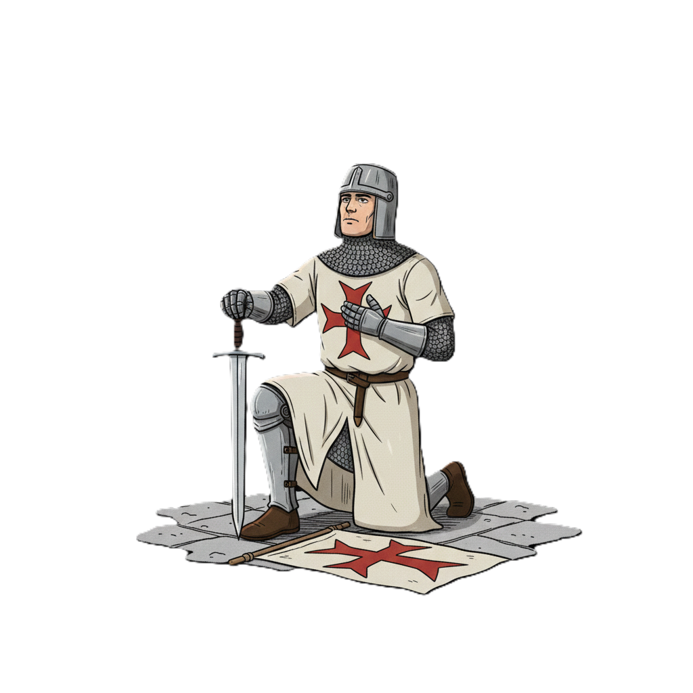
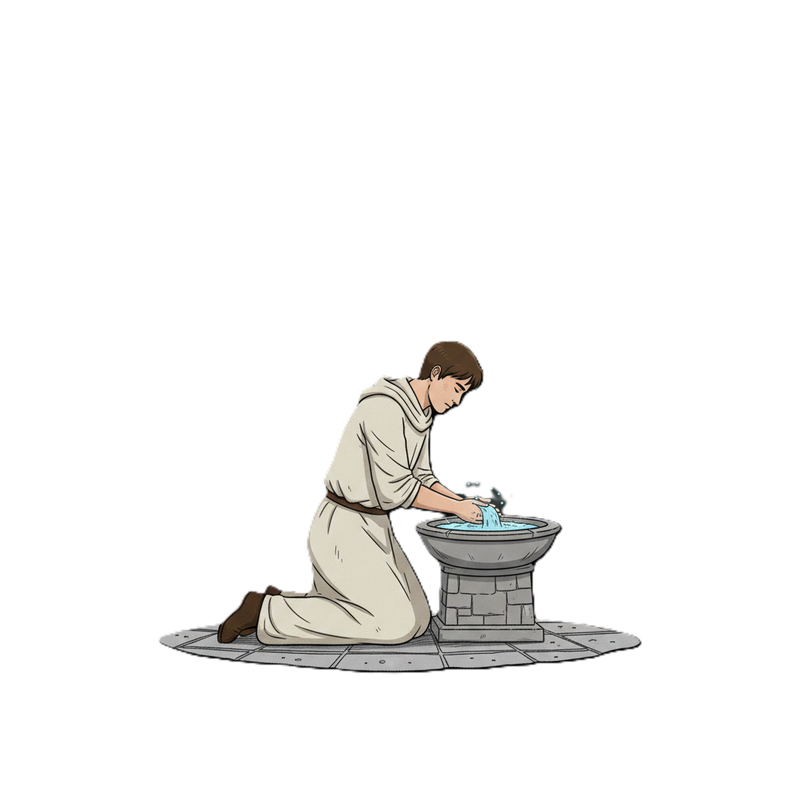

Valores y Principios DeMolay

Amor Filial
El amor y respeto profundo hacia los padres y la familia, base de todo buen ciudadano y DeMolay.

Reverencia por las Cosas Sagradas
La fe y el respeto por lo espiritual, promoviendo la tolerancia y la reflexión en la vida diaria.

Cortesía
La amabilidad y el respeto distinguen a un DeMolay en su trato con los demás.

Compañerismo
El apoyo mutuo y la solidaridad fortalecen la hermandad y el crecimiento personal.

Fidelidad
La lealtad a los principios, a la familia y a los amigos es un pilar fundamental en la vida DeMolay.

Pureza
Buscar la pureza de pensamiento, palabra y acción para ser mejores cada día.

Patriotismo
El amor y el compromiso con la patria, trabajando por el bien común y el progreso de la sociedad.